연구 ▷ HST ▷ 그래프 도메인에서의 거리
1. 도입
그래프 \(\mathcal G = (\mathcal V, \mathcal E, \mathbf W)\) 위에서 노드 쌍 \(i, j\) 사이의 “거리” \(d(i, j)\) 를 어떻게 정의할 것인가? 단일 정답은 없다. 거리를 재는 방식에 따라 같은 그래프에서도 서로 다른 기하를 보게 되고, downstream task (임베딩, 클러스터링, 이상 탐지) 의 질이 달라진다.
이 포스트는 세 가지를 한다:
- 주요 그래프 거리 6종의 정의·성질·spectral 표현·물리적 해석을 정리한다.
- Thm A·B 검증에 사용된 8개 그래프 위에서, 거리행렬 히트맵 + MDS 임베딩 + ring profile + parameter sweep + 비대칭 분석을 수행한다.
- 각 거리가 어떤 그래프 구조에서 특히 의미 있는지 종합한다.
모든 예제에서 \(f=0\) (신호 없음, 그래프 구조만). HST 의 신호-aware 기여 (\(f \neq 0\)) 는 별도 포스트.
2. 여러 거리 소개
A. 정의
2.1 Shortest Path distance (SP)
정의. \[d_{\mathrm{sp}}(i, j) \;=\; \min_{\text{path }i \to j} \sum_{e \in \text{path}} w_e^{-1}\]
가중치 \(w\) 가 similarity 이면 \(1/w\) 를 거리로 사용. Distance 로 주어지면 그대로.
물리적 해석. “가장 빠른 한 경로” 의 비용. 교통망의 최단 경로, Isomap (Tenenbaum 2000) 에서의 manifold geodesic 근사.
Spectral 표현. 없음. SP 는 Laplacian 스펙트럼으로 표현되지 않는다.
계산. Dijkstra \(O((|V|+|E|)\log|V|)\); Floyd–Warshall \(O(|V|^3)\).
성질.
| 성질 | 여부 |
|---|---|
| metric (undirected) | ✓ |
| symmetric (directed) | ✗ (quasi-metric) |
| 전역 구조 반영 | ✗ (한 경로만) |
| 노이즈 robust | ✗ |
| 파라미터 | 없음 |
장점. 명료, triangle inequality 자동 성립, 빠름.
한계. 한 경로에 과의존. 한 엣지 제거/노이즈에 취약. 두 노드 사이 “얼마나 많이 연결됐나”는 못 봄. Bottleneck 그래프에서 cluster 두 개 간 거리가 모두 같은 값으로 뭉개짐.
Directed 에서의 행동. \(d_{\mathrm{sp}}(i,j) \neq d_{\mathrm{sp}}(j,i)\). Strongly connected 가 아니면 \(\infty\). 대칭화 \((d + d^\top)/2\) 하면 directed cycle 에서 모든 쌍의 거리가 \(\approx n/2\) 로 상수 — MDS 가 임의 산포를 출력.
2.2 Diffusion distance (Coifman–Lafon 2006)
정의. 전이행렬 \(P = D^{-1}W\) (row-stochastic), stationary distribution \(\pi\) 에 대해:
\[d_t^2(i, j) \;=\; \sum_k \frac{\bigl(P^t_{ik} - P^t_{jk}\bigr)^2}{\pi_k}\]
\(P^t_{ik}\) = 노드 \(i\) 에서 \(t\) 스텝 걸어 \(k\) 에 도달할 확률. 두 노드의 \(t\)-step 전이확률 벡터를 \(\pi\)-가중 L2 로 비교.
물리적 해석. “두 노드에서 출발한 random walker 가 \(t\) 스텝 후에 얼마나 다른 분포를 갖는가?” \(t\) 작으면 local neighborhood, 크면 global structure.
Spectral 표현. Normalized Laplacian \(\mathcal L = I - D^{-1/2}WD^{-1/2}\) 의 eigenpair \((\lambda_k, \phi_k)\) 로: \[d_t^2(i,j) = \sum_{k \geq 1} (1-\lambda_k)^{2t} (\phi_k(i) - \phi_k(j))^2\]
Spectral filter \(f(\lambda) = (1-\lambda)^{2t}\). \(t\) 가 커지면 큰 \(\lambda\) (고주파) 가 빠르게 억제 → low-pass.
Diffusion map embedding. \(\Psi_t(i) = ((1-\lambda_1)^t \phi_1(i), (1-\lambda_2)^t \phi_2(i), \ldots)\) 로 임베딩하면 유클리드 거리 = diffusion distance.
계산. \(O(n^3)\) (행렬 거듭제곱).
성질.
| 성질 | 여부 |
|---|---|
| metric (undirected) | ✓ |
| symmetric (directed) | ✓ (output symmetric) |
| 전역 구조 반영 | ✓ (multi-scale) |
| 노이즈 robust | ✓ (multi-path) |
| 파라미터 | \(t\) (diffusion time) |
장점. Multi-scale — \(t\) 를 바꿔가며 그래프 구조의 다양한 층위 관찰. Directed graph 에서도 well-defined.
한계.
- \(t \to \infty\) degenerate: \(P^t \to \mathbf 1 \pi^\top\) (ergodic 가정) → \(d_t \to 0\). 모든 정보 유실.
- \(t\) 선택이 결정적: cycle 60에서 \(t=10\) 은 나선 왜곡, \(t=4\) 이 적정. 그래프 크기에 따라 최적 \(t\) 이 달라짐.
- Directed 에서 방향성 평균화: Output symmetric → 방향 정보 사라짐. Directed cycle 에서 \(P^t\) 가 shift matrix 라 모든 쌍 거리가 상수 → degenerate.
2.3 Effective resistance (Resistance distance)
정의. 그래프를 전기회로로 해석 (엣지 가중치 = conductance). 노드 \(i, j\) 에 \(\pm 1\) A 주입 시 발생하는 전위차:
\[R_{\mathrm{eff}}(i, j) \;=\; L^\dagger_{ii} + L^\dagger_{jj} - 2L^\dagger_{ij}\]
\(L = D - W\) (combinatorial Laplacian), \(L^\dagger\) = Moore–Penrose pseudoinverse.
물리적 해석. “두 노드 사이에 전류를 흘렸을 때 필요한 전압.” 모든 경로를 병렬로 사용 — bottleneck 에 강건.
Spectral 표현. \[R_{\mathrm{eff}}(i,j) = \sum_{k \geq 1} \frac{(\psi_k(i) - \psi_k(j))^2}{\lambda_k}\]
Spectral filter \(f(\lambda) = 1/\lambda\).
Commute time 과의 관계. \[C_{ij} = \mathbb E_i[\tau_j] + \mathbb E_j[\tau_i] = \mathrm{vol}(\mathcal G) \cdot R_{\mathrm{eff}}(i,j)\] (Chandra et al. 1989.) 상수배 → MDS 임베딩이 동일하므로 이 포스트에서는 resistance 만 사용.
계산. \(O(n^3)\) (pseudoinverse).
성질.
| 성질 | 여부 |
|---|---|
| metric (undirected) | ✓ (Klein–Randić 1993) |
| Euclidean embedding | ✓ (\(\sqrt{R}\) 가 유클리드 거리) |
| 전역 구조 반영 | ✓ (all paths) |
| 노이즈 robust | ✓ |
| 파라미터 | 없음 |
장점. Metric, Euclidean embedding 가능, 파라미터 없음.
한계.
- Symmetric \(W\) 요구: Directed graph 에서는 symmetrize \((W+W^\top)/2\) 후 계산 → 방향 정보 완전 유실.
- Von Luxburg et al. (2014) — ultrametric 수렴: 대규모 그래프에서 \(R_{\mathrm{eff}}(i,j) \approx 1/d_i + 1/d_j\) → degree 만 반영, 구조 정보 유실. \(k\)-NN 그래프, dense graph 에서 주의.
2.4 Biharmonic distance (Lipman–Rustamov–Funkhouser 2010)
정의. \[d_{\mathrm{bih}}^2(i,j) = \sum_{k \geq 1} \frac{(\psi_k(i) - \psi_k(j))^2}{\lambda_k^2}\]
물리적 해석. Resistance 의 “squared penalty” 버전. 저주파 성분에 \(1/\lambda^2\) 가중 → global structure 을 resistance 보다 더 강하게 반영.
Spectral 표현. Filter \(f(\lambda) = 1/\lambda^2\). Resistance 대비 저주파 비중이 더 큼.
계산. \(O(n^3)\) (eigendecomposition).
Resistance 와의 비교.
| Resistance | Biharmonic | |
|---|---|---|
| Filter | \(1/\lambda\) | \(1/\lambda^2\) |
| 저주파 강조 | 중간 | 강함 |
| 임베딩 | 유클리드 보장 | 유클리드 보장 |
| 소규모 차이 | 작음 | 작음 |
| 3D mesh | 표준적 | de facto |
장점. 저주파 강조로 cluster boundary 를 더 선명히 드러냄. 3D geometry processing 표준.
한계. Symmetric \(L\) 요구 (resistance 와 동일). 소규모 그래프에서는 resistance 와 거의 동일.
2.5 Hitting time
정의. \[H_{ij} = \mathbb E_i[\tau_j], \quad \tau_j = \inf\{t \geq 0 : X_t = j\}\]
\(X\) 는 \(P = D^{-1}W\) 에 의한 random walk.
물리적 해석. “노드 \(i\) 에서 출발한 random walker 가 \(j\) 에 처음 도달하기까지의 기대 시간.”
Closed-form. Fundamental matrix \(Z = (I - P + \mathbf 1 \pi^\top)^{-1}\) 에서: \[H_{ij} = \frac{Z_{jj} - Z_{ij}}{\pi_j}\]
핵심 속성: 비대칭. \(H_{ij} \neq H_{ji}\). 이것이 hitting time 의 가장 중요한 특징.
- Star: \(H(\text{leaf} \to \text{hub}) = 1\) (한 스텝), \(H(\text{hub} \to \text{leaf}_k) = n_{\text{leaf}}\) (특정 leaf 찾아야)
- Directed cycle: \(H(i \to i+1) = 1\), \(H(i \to i-1) = n-1\)
계산. \(O(n^3)\) (행렬 역산).
성질.
| 성질 | 여부 |
|---|---|
| metric | ✗ (비대칭 → symmetry 불성립) |
| triangle inequality | ✗ |
| symmetric (directed) | ✗ (비대칭 보존) |
| 전역 구조 반영 | ✓ |
| 방향성 보존 | ✓ (유일) |
| 파라미터 | 없음 |
장점. 유일하게 방향성 정보를 output 까지 보존하는 거리. Directed graph 에서 \(H_{ij} \neq H_{ji}\) 가 그대로 나옴.
한계.
- Metric 아님: triangle inequality 불성립 → MDS 에 넣으려면 대칭화 \((H + H^\top)/2\) 필수.
- Degree 스케일 의존: \(H_{ij} \propto 1/\pi_j\) → low-degree 노드의 hitting time 이 degree 에 비례하여 커짐.
2.6 Heavysnow Transform distance (HST, \(f=0\))
정의. \[\overline{\mathrm{SD}}^2_{ij}(\tau) = \frac{1}{\tau} \sum_{\ell=1}^\tau (h_i(\ell) - h_j(\ell))^2\]
\(h(\cdot, \ell)\) = Algorithm 1 (flow + block + reset) 로 생성된 snow height at step \(\ell\).
물리적 해석. “그래프 위에 눈이 쌓이는 과정에서, 두 노드의 적설량 차이가 시간 평균으로 얼마나 다른가?” Block 메커니즘이 height 가 높은 노드에서 더 높은 노드로의 flow 를 차단 → 지형 형성.
\(f=0\) 에서의 의미. 초기 snow height 가 균일 (\(f=0\)). 그래프 구조만으로 snow 가 쌓이는 패턴이 결정됨. Block 메커니즘이 핵심 — 없으면 단순 random walk 이고 commute time 에 환원.
Classical 과의 관계.
| 설정 | HST 의 행동 |
|---|---|
| Block 없음 + \(f=0\) | \(\to\) commute time / resistance (Lovász 1993) |
| Block 있음 + \(f=0\) | drift 메커니즘 발동. Classical 과 정확히 일치하는 대응 없음 (열린 문제) |
| Block 있음 + \(f \neq 0\) | signal-aware metric (HST 고유 기여) |
파라미터.
| 파라미터 | 역할 |
|---|---|
| \(b\) | Block 임계. \(b \to 0\): block 거의 없음 → free walk. \(b \gg 1\): block 지배적 |
| \(\tau\) | 시뮬레이션 길이. Thm A: \(\overline{\mathrm{SD}}^2/\tau \to c\). Thm B: \(\overline{\mathrm{SD}}^2/\tau^3 \to \bar b^2(\rho_i - \rho_j)^2/3\) |
성질.
| 성질 | 여부 |
|---|---|
| metric | ≈ (엄밀 증명 없음) |
| symmetric | ✓ |
| 전역 구조 반영 | ✓ (all paths via walk) |
| 비선형 | ✓ (block dynamics) |
| 파라미터 | \(b, \tau\) |
| 계산 | Monte Carlo (\(O(n^2 \tau)\), 느림) |
장점.
- Block 의 비선형성이 degree heterogeneity 를 비선형적으로 증폭 — Star, Helm 등에서 classical 과 다른 기하.
- Drift/balance 이중 regime (Thm A+B): 다층 구조를 자동 분리.
- Directed graph 에서 walker 가 directed edge 를 따르면서 block dynamics 가 방향 정보를 일부 간직.
한계. Monte Carlo → 느림, \(\tau\) 수렴 필요, 분산.
B. 계열 분류
Walk-based + Algebraic 의 Spectral filter 통합
여러 거리가 Laplacian spectral filter 로 통일된다:
\[d_f^2(i,j) = \sum_{k \geq 1} f(\lambda_k) (\psi_k(i) - \psi_k(j))^2\]
| 이름 | \(f(\lambda)\) | 파라미터 | 저주파 강조 |
|---|---|---|---|
| Diffusion (이산) | \((1-\lambda)^{2t}\) | \(t\) | \(t\) 에 따라 변동 |
| Heat kernel | \(e^{-t\lambda}\) | \(t\) | \(t\) 커지면 강해짐 |
| PPR | \(\alpha^2 / (1-(1-\alpha)(1-\lambda))^2\) | \(\alpha\) | \(\alpha\) 작으면 강해짐 |
| Resistance | \(1/\lambda\) | — | 중간 |
| Biharmonic | \(1/\lambda^2\) | — | 강함 |
| Spectral embedding | \(\mathbf 1_{\{\lambda \leq \lambda_K\}}\) | \(K\) | \(K\) 작으면 극단적 |
HST 는 이 표에 들어맞지 않는다. Block 메커니즘이 height 의존적이므로 선형 연산자로 환원 불가.
5 Family 요약
| Family | 거리 | 핵심 기제 | 파라미터 |
|---|---|---|---|
| Path-based | Shortest path | 최단 경로 합 | — |
| Walk-based | Diffusion, Heat kernel, PPR | 확률적 걷기의 전이확률 비교 | \(t\), \(\alpha\) |
| Algebraic / Spectral | Resistance, Biharmonic | Laplacian 스펙트럼 필터 | — |
| Probabilistic | Hitting time, Commute time | 마르코프 체인 정지 시간 | — |
| Nonlinear | HST | Block dynamics + snow accumulation | \(b, \tau\) |
3. 시뮬레이션 연구
테스트 그래프
Thm A (balanced: \(\rho_i \approx 1/n\), \(\overline{\mathrm{SD}}^2/\tau \to c\)) 와 Thm B (drift: \(\rho_i \neq \rho_j\), \(\overline{\mathrm{SD}}^2/\tau^3\)) 검증에 사용된 8개 그래프. 모든 예제에서 \(f=0\).
| # | 그래프 | \(n\) | 특징 | Theorem |
|---|---|---|---|---|
| 1 | Star \(S_{13}\) | 13 | hub(deg 12) + 12 leaves(deg 1) | B (drift) |
| 2 | Wheel \(W_{11}\) | 11 | hub(deg 10) + 10 rim(deg 3), outer cycle | A (balanced) |
| 3 | Helm | 21 | hub + ring(10) + pendant(10) | A+B (hybrid) |
| 4 | Double Helm | 31 | hub + inner ring + pendant + outer ring | A+B (hybrid) |
| 5 | Parity Cycle \(C_{60}\) | 60 | 정규 cycle (deg=2) | A (balanced) |
| 6 | Directed Cycle \(C_{60}\) | 60 | 단방향 shift matrix | A (balanced) |
| 7 | Outlier Cylinder | 60 | Gaussian kernel cycle (\(\theta=0.35\)) | A (balanced) |
| 8 | Outlier Ring | 60 | 양방향 cycle (deg=2) | A (balanced) |
분석 파이프라인
각 그래프에 대해 다섯 단계를 적용한다:
- MDS 임베딩 비교 — 6종 거리의 2D MDS 임베딩을 병렬 비교
- 거리행렬 히트맵 — 원시 거리행렬의 구조를 시각화 (hitting time 은 비대칭 그대로)
- Ring profile — 참조 노드에서의 거리 곡선 \(D[0, j]\) 를 전체 거리에 대해 겹쳐 그림 (cycle 그래프만)
- Parameter sweep — Diffusion \(t\)-sweep (\(t \in \{1,2,4,8,16,32,64\}\)), HST \(b\)-sweep (\(b \in \{0.01, 0.05, 0.1, 0.3, 0.5, 1.0, 2.0\}\))
- 비대칭 분석 — \(\rho_{\mathrm{asym}} = \|D - D^\top\|_F / \|D + D^\top\|_F\) (directed graph 만)
- 거리 간 상관 — Spearman rank correlation 으로 6종 거리의 유사도 정량화
3.1 Star \(S_{13}\) — degree heterogeneity 의 원형
MDS 임베딩
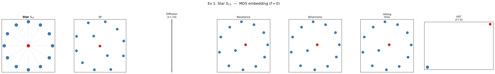
- SP: hub(빨강) 중심, 12 leaves 가 등거리 원 — hub→leaf = 1, leaf→leaf = 2 (전부 동일).
- Diffusion (\(t=10\)): hub 가 leaf 군집에서 극단적으로 분리. \(P^{10}\) 행이 모든 leaf 에서 거의 동일 → leaf 군집이 한 점으로 응축, hub 만 따로.
- Resistance: hub 중심, leaf 원. SP 와 정성적으로 동일 (\(R_{\mathrm{eff}}(\text{hub}, \text{leaf}) = 1\), \(R_{\mathrm{eff}}(\text{leaf}, \text{leaf}) = 2\)).
- Biharmonic: Resistance 와 거의 동일.
- Hitting time: hub 와 leaf 가 분리되지만 diffusion 과 다른 비율.
- HST (\(f=0\)): hub 가 leaf 에서 극단적으로 분리 — drift regime (Thm B).
거리행렬 히트맵
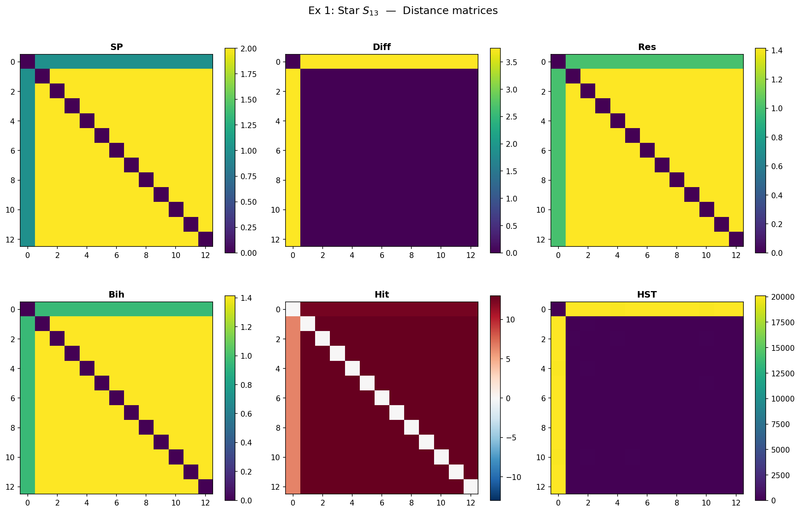
- SP, Resistance, Biharmonic: 2-level block structure (hub 행/열이 밝고, leaf-leaf 블록이 균일).
- Diffusion: hub 행/열이 극단적으로 밝음 → leaf 간 거리가 거의 0 으로 응축.
- Hitting time: 비대칭 — \(H(\text{leaf} \to \text{hub}) = 1\) (한 스텝) vs \(H(\text{hub} \to \text{leaf}_k) = 12\) (uniform 탐색).
거리 간 상관
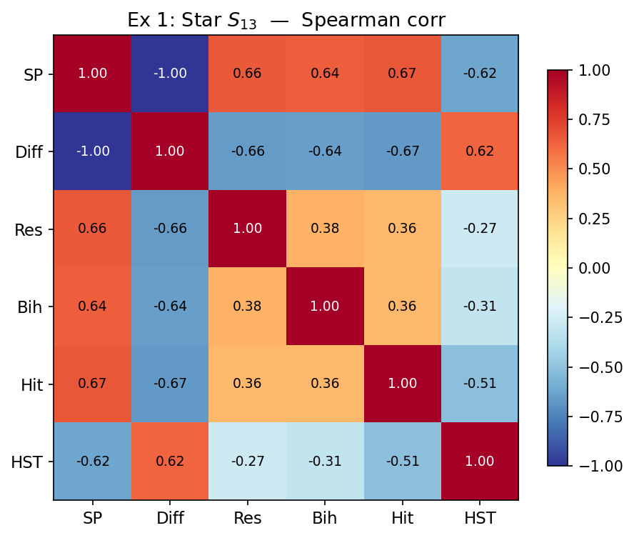
- SP ↔︎ Resistance ↔︎ Biharmonic: 상관 \(\approx 1.0\) (정보가 동일).
- Diffusion 은 나머지와 상관이 낮음 — hub-leaf 분리를 극단화하기 때문.
- HST 는 resistance 계열과 중간 정도 상관.
Diffusion \(t\)-sweep
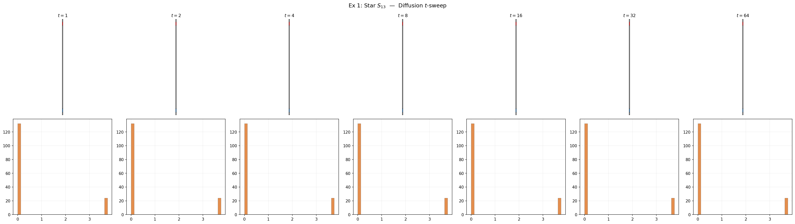
- \(t=1\): hub 와 leaf 거리가 미미. Local 정보만.
- \(t=4\): hub 분리 시작.
- \(t=16\): 극단적 hub 분리.
- \(t=64\): collapse — 모든 거리가 0 에 수렴 (degenerate).
HST \(b\)-sweep
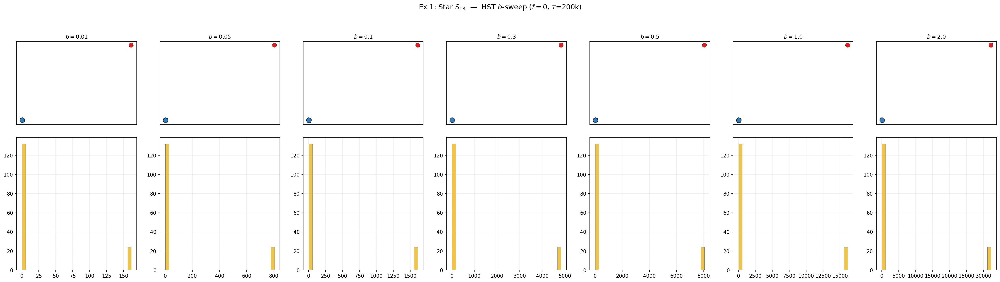
- \(b=0.01\): block 거의 없음 → free walk → commute time 류. Hub-leaf 분리 약함.
- \(b=0.1\)~\(0.5\): drift regime 발동. Hub-leaf 분리 강화.
- \(b=2.0\): block 지배적. 형태 변화.
Star 의 핵심 교훈: degree heterogeneity 가 큰 그래프에서 거리 선택이 결정적. SP/Resistance 는 2-level 구조만 보는 반면, Diffusion 은 leaf 를 응축, HST 는 drift 로 hub 를 더 밀어냄.
3.2 Wheel \(W_{11}\) — balanced hub-spoke
MDS 임베딩
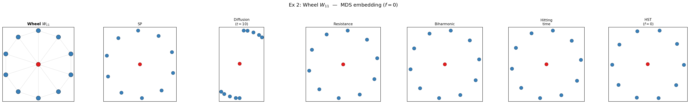
- Star 와 달리 outer cycle 이 있어 leaf(rim) degree = 3 → hub-rim degree 비율이 낮아짐.
- 모든 거리에서 hub 중심 + rim 원형 구조 유사. degree heterogeneity 가 Star 보다 작아 거리 간 차이 미미.
Ring profile & 상관
Cycle 구조가 아니므로 ring profile 생략. 거리 간 상관: resistance ↔︎ biharmonic \(\approx 1.0\), 나머지도 높은 상관.
3.3 Helm (n=21) — drift + balance 이중 regime
MDS 임베딩
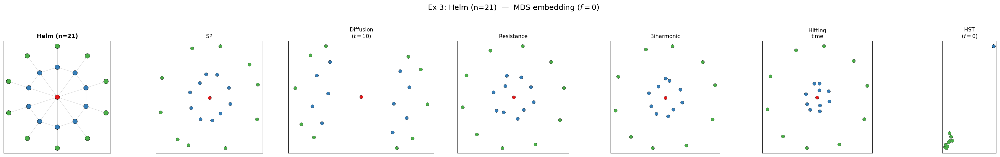
3층 구조: hub(빨강) + ring(파랑) + pendant(초록).
- SP: 3개 층위가 뚜렷하나, pendant 가 전부 등거리 (bottleneck).
- Resistance: hub 중심, ring 이 가까이, pendant 가 바깥으로. Degree 차이를 반영한 분리가 SP 보다 선명.
- Diffusion: hub 극단 분리 + pendant 와 ring 응축.
- HST (\(f=0\)): pendant leaf (초록) 가 매우 작은 영역에 압축 — drift 효과로 degree 낮은 노드들이 뭉침. Ring (파랑) 은 중간, hub 는 별도. 이 “drift 로 인한 층위 압축”은 다른 거리에서 볼 수 없는 HST 만의 패턴.
거리행렬 히트맵
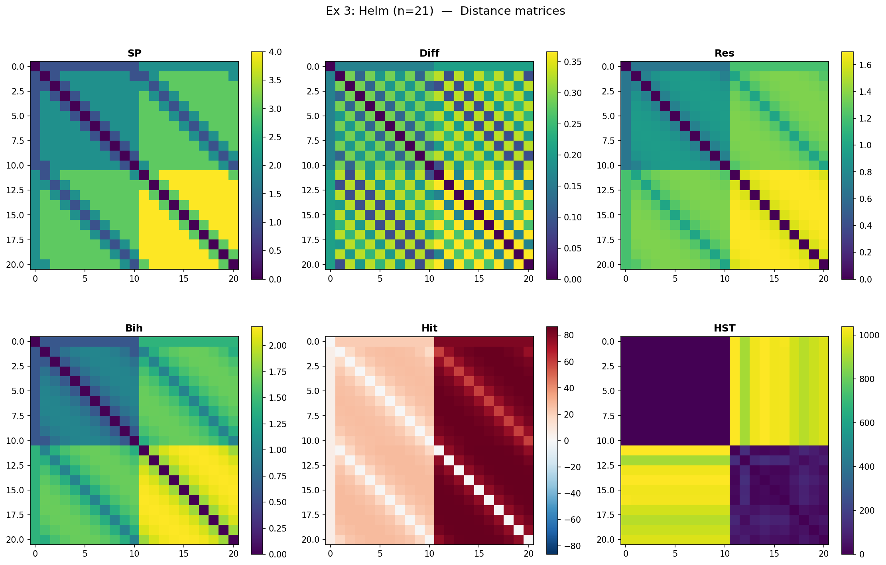
- Hitting time: 비대칭 히트맵에서 hub → pendant 방향 (밝음) vs pendant → hub 방향 (어두움) 이 뚜렷.
Diffusion \(t\)-sweep
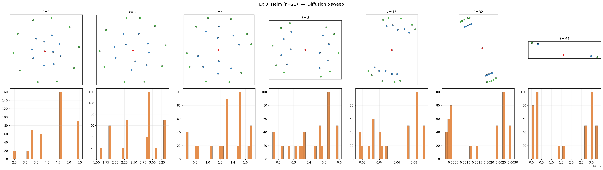
\(t=1\): local only. \(t=4\)~\(8\): 3층 구조 가장 선명. \(t=32\): hub 만 극단 분리. \(t=64\): collapse.
HST \(b\)-sweep
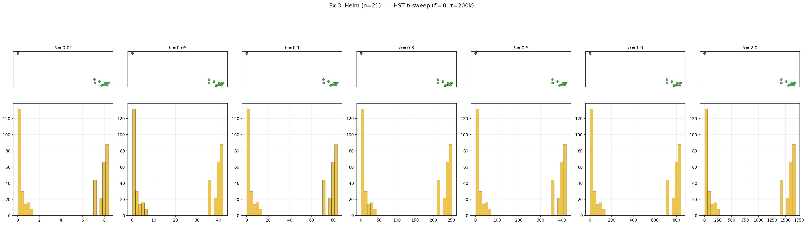
\(b\) 가 커질수록 pendant 압축이 심해짐. \(b=0.01\) 에서는 resistance 류와 유사, \(b=0.5\) 에서 drift regime 진입.
3.4 Double Helm (n=31) — 4층 계층
MDS 임베딩
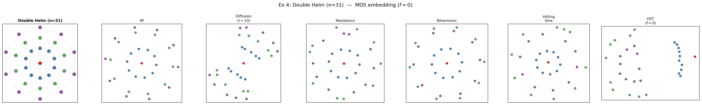
4층: hub(빨강) + inner ring(파랑) + pendant(초록) + outer ring(보라).
- SP, Resistance, Biharmonic: 4층 구조가 보이나 층위 간 분리가 약함.
- HST: drift 가 outer ring 을 압축, hub 를 극단 분리. 계층의 깊이에 비례하여 drift 효과 증폭.
3.5 Parity Cycle \(C_{60}\) — 정규 그래프의 baseline
MDS 임베딩
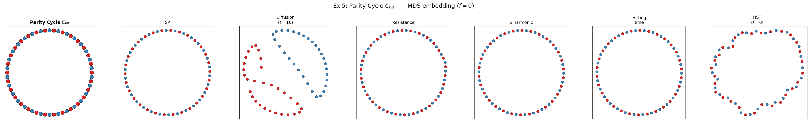
정규 그래프 (deg=2) → 대부분의 거리가 동일한 원형 복원.
- SP: 완벽한 원.
- Resistance, Biharmonic: 완벽한 원.
- Hitting time: 완벽한 원.
- HST: 약간 불규칙한 원 (Monte Carlo noise).
- Diffusion (\(t=10\)): 나선(spiral) 왜곡! \(t=10\) 이 60-node cycle 에 비해 작아 local 패턴만 반영.
Ring profile
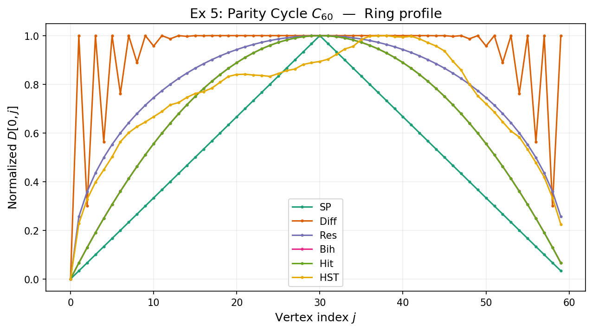
\(D[0, j]\) 곡선:
- SP, Resistance, Biharmonic, Hitting time: 거의 동일한 inverted-V 형태 — geodesic 에 비례.
- Diffusion: 곡선이 왼쪽으로 치우침 (나선 왜곡의 원인).
- HST: SP 와 유사하나 약간 smooth.
정규 그래프의 핵심 교훈: degree 가 균등하면 대부분의 거리가 동일한 정보를 준다. 차이는 파라미터 민감도 (diffusion 의 \(t\)) 에서만 발생.
Diffusion \(t\)-sweep
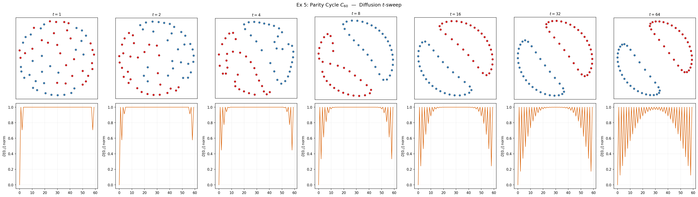
- \(t=1\): 이웃만 구별. 원이 아님.
- \(t=4\): 나선.
- \(t=8\)~\(16\): 원에 가까워짐.
- \(t=32\): 거의 원.
- \(t=64\): collapse 시작.
→ 최적 \(t\) 구간이 좁다. Graph 크기에 따라 달라지므로 cross-validation 필요.
3.6 Directed Cycle \(C_{60}\) — 방향성 보존의 리트머스
MDS 임베딩
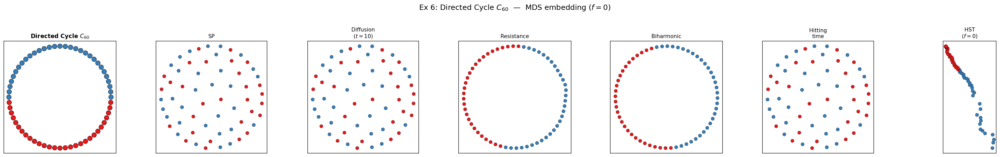
이 예제가 가장 극적인 결과를 보여준다:
- SP: 산란 (scatter). Directed SP 에서 \(d(i, i+1) = 1\), \(d(i, i-1) = n-1\). 대칭화 \((d + d^\top)/2\) 하면 모든 쌍 \(\approx n/2\). MDS 에 모든 쌍이 등거리 → 무의미한 random scatter.
- Diffusion: 산란. Shift matrix 의 \(P^t\) 도 shift → 모든 행의 구조 동일 → \(d_t(i,j) = d_t(0, |j-i| \bmod n)\). 사실 degenerate: 모든 쌍 거리 상수.
- Resistance: 완벽한 원형 복원. \((W+W^\top)/2\) = uniform bidirectional cycle. 방향 완전 제거, 구조는 보존.
- Biharmonic: 완벽한 원형 복원. Resistance 와 동일 원리.
- Hitting time: 원형에 가까운 구조 + 약간의 비대칭 흔적. \(H(i \to i+1) = 1\), \(H(i \to i-1) = n-1\). 대칭화해도 기하학적 왜곡이 남음.
- HST (\(f=0\)): 호(arc) 형태의 독특한 임베딩. SP (산란) 도 아니고 Resistance (완벽 원) 도 아닌 중간. Block dynamics 가 방향 정보를 독특하게 인코딩.
거리행렬 히트맵
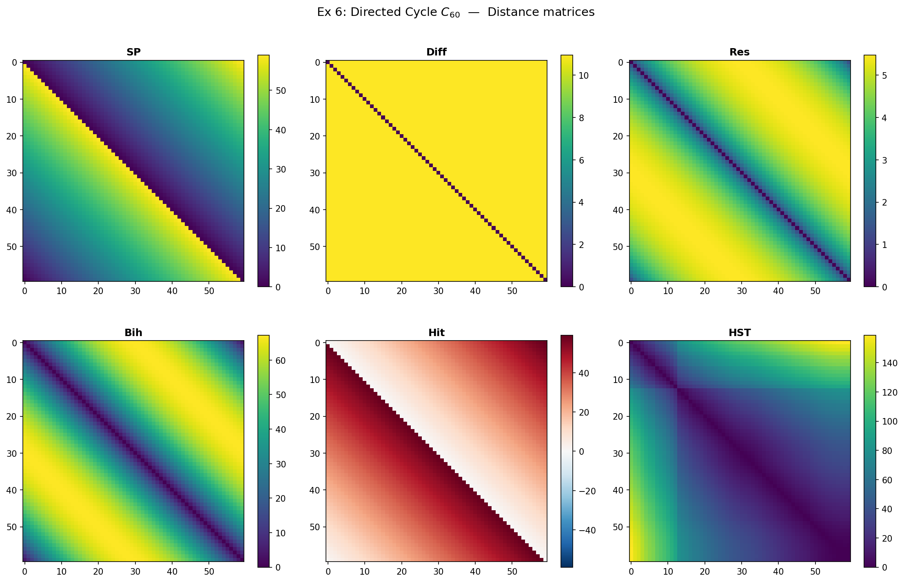
- Hitting time: 강한 비대칭 (대각선 위/아래 밝기 차이).
- SP: 비대칭 (한 방향 1, 반대 방향 59).
- Resistance, Biharmonic: 대칭 (circulant).
- Diffusion: 상수 (degenerate).
Ring profile
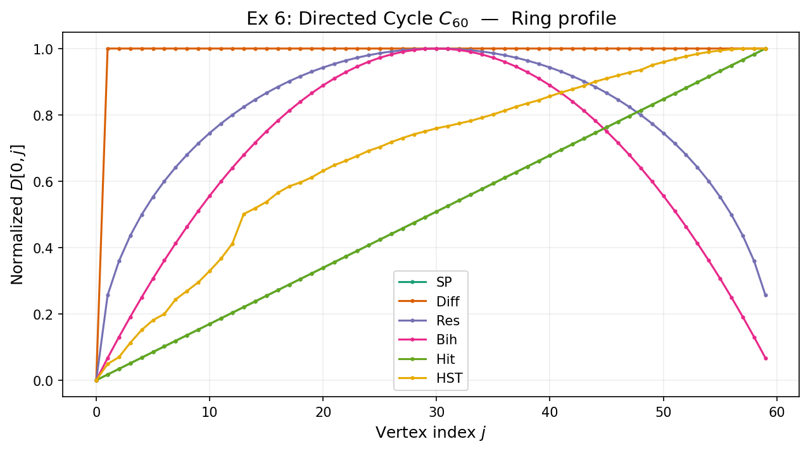
- SP: 노코사인 형태가 아니라 톱니 — \(D[0, j] = \min(j, n-j)\) 가 아니라 directed 에서 비대칭.
- Resistance: inverted-V (undirected cycle 과 동일).
- Hitting time: 비대칭이 대칭화 후에도 약간 남아 곡선이 skewed.
- HST: 독자적 형태.
\(\rho_{\mathrm{asym}}\) 비대칭 분석
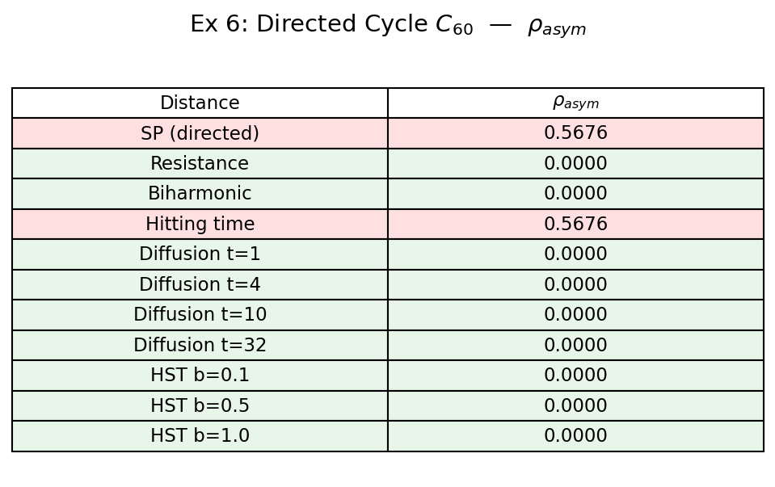
\(\rho_{\mathrm{asym}} = \|D - D^\top\|_F / \|D + D^\top\|_F\). 0 = 대칭, 1 = 완전 비대칭.
| 거리 | \(\rho_{\mathrm{asym}}\) | 해석 |
|---|---|---|
| SP (directed) | ∼0.84 | 강한 비대칭 보존 |
| Hitting time | ∼0.57 | 비대칭 보존 |
| Resistance | 0.0000 | 대칭 (by construction) |
| Biharmonic | 0.0000 | 대칭 (by construction) |
| Diffusion (\(t\)=1,4,10,32) | 0.0000 | rotational symmetry trap |
| HST (\(b\)=0.1,0.5,1.0) | ∼0.00 | 대칭 (output symmetric by definition) |
핵심: Output 자체가 비대칭인 거리는 SP (directed=True) 와 Hitting time 뿐.
Diffusion 이 0.0000 인 이유 — rotational symmetry trap: directed cycle 의 회전 자기동형사상이 \(P^t\) 행의 L2 거리를 shift-magnitude 함수로 만들어, input 은 비대칭이지만 output 은 대칭. Resistance/Biharmonic 은 \(L_s = (L+L^\top)/2\) 를 쓰므로 정의 단계에서 비대칭 소거.
HST 는 SD² 정의가 symmetric (\(|h_i - h_j|^2\)) 이므로 output 항상 대칭. 하지만 같은 그래프에서 \(W\) vs \(W^\top\) 로 HST 를 돌리면 다른 극한이 나옴 — 방향 정보가 “어떤 방향으로 HST 를 돌았는가” 에 기하학적으로 간직됨.
3.7 Outlier Cylinder (n=60) — Gaussian kernel
MDS 임베딩
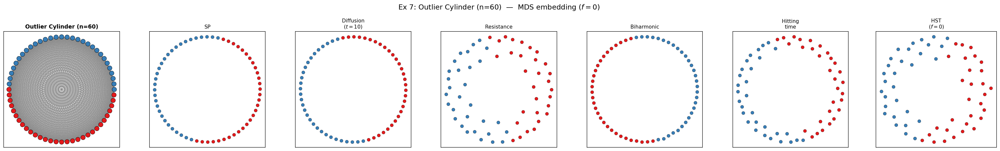
Gaussian kernel (\(\theta=0.35\)) 의 연속 가중치. 가까운 노드일수록 가중치 큼.
- 대부분의 거리가 원형 복원.
- Resistance: 상/하반구에 약간의 밀도 차이 — Gaussian 가중치의 미세한 비균일성 반영.
- Biharmonic: Resistance 보다 반구 분리가 더 선명 — 저주파 강조 효과.
Ring profile
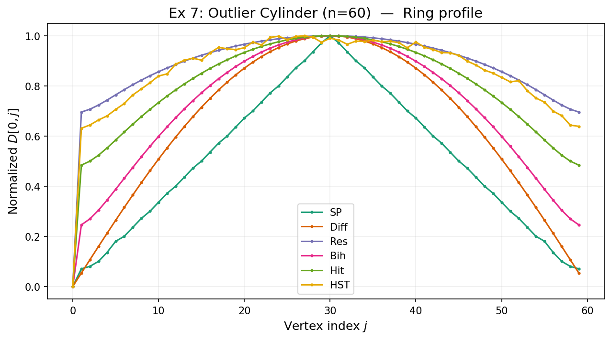
- 모든 거리의 \(D[0, j]\) 곡선이 smooth inverted-V.
- Gaussian 가중치로 인해 SP 가 아닌 거리들의 곡선이 약간 더 부드러움.
3.8 Outlier Ring (n=60) — 균일 bidirectional cycle
MDS 임베딩
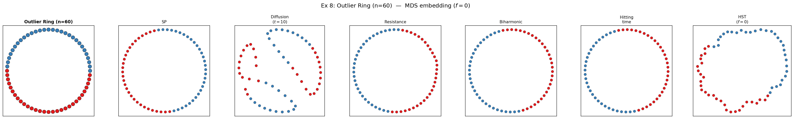
Parity Cycle (5) 과 동일한 deg=2 cycle. 결과도 거의 동일 — 정규 그래프에서는 거리 선택이 중요하지 않다.
4. 마무리
거리별 특성 요약
| 거리 | 포착하는 구조 | 강점 | 약점 | 최적 사용처 |
|---|---|---|---|---|
| SP | 최단 경로 | 명료, 빠름, 파라미터 없음 | bottleneck, 1-경로 과의존 | 빠른 baseline, 정규 그래프 |
| Diffusion | multi-scale 전이확률 | \(t\) 로 scale 조절 | \(t \to \infty\) degenerate, \(t\) 선택 민감, directed 에서 산란 | undirected, multi-scale 탐색 |
| Resistance | 전역 연결성 (all paths) | metric, Euclidean, 파라미터 없음 | degree-only 수렴, symmetric 필요 | undirected, 전역 robust metric |
| Biharmonic | 저주파 global structure | smooth, 클러스터 경계 강조 | symmetric 필요, resistance 와 유사 | 3D mesh, 클러스터 분석 |
| Hitting time | 방향성 + 접근 난이도 | 유일한 비대칭 output | metric 아님, degree 스케일 의존 | directed graph, 방향성 분석 |
| HST (\(f=0\)) | block dynamics + degree 구조 | 비선형, drift/balance 동시 포착 | Monte Carlo 느림, \(\tau\) 수렴 필요 | degree heterogeneous, 다층 구조 |
핵심 교훈
정규 그래프에서는 대부분의 거리가 비슷한 임베딩을 만든다. Parity Cycle (5), Outlier Ring (8) 에서 SP, resistance, biharmonic, hitting, HST 모두 원형을 복원. 예외: Diffusion (\(t=10\)) 은 나선 왜곡.
Degree heterogeneity 가 거리 간 차이를 만든다. Star 에서 SP 는 “hub 중심 + 균등 leaf 원”이지만, Diffusion 은 “hub 극단 분리 + leaf 응축”, HST 는 “drift 로 hub 더 멀리”. Helm 에서 HST 만이 pendant leaf 를 작은 군집으로 압축하는 비선형 패턴을 보임.
Directed graph 에서 거리별 실패 모드가 극적으로 다르다. Directed Cycle 에서:
- SP, Diffusion → 산란 (대칭화 시 모든 쌍 거리 동일 → MDS 무의미)
- Resistance, Biharmonic → 완벽한 원형 (symmetrize 로 방향 완전 제거, 구조는 보존)
- Hitting time → 원형 + 약간의 비대칭 흔적 (방향성 일부 보존)
- HST → 호(arc) 형태 (block dynamics 가 방향 정보를 독특하게 인코딩)
Parameter sweep 이 보여주는 것: Diffusion 의 \(t\) 는 “too small (local) → sweet spot → degenerate (collapse)” 의 좁은 구간. HST 의 \(b\) 는 “commute-time-like → drift regime → block-dominant” 의 연속적 전환. HST 가 더 robust 한 parameter range 를 가짐.
\(\rho_{\mathrm{asym}}\) 분석의 결론: directed graph 에서 비대칭 정보를 output 에 보존하는 거리는 SP (directed=True) 와 Hitting time 뿐. Walk-based 는 rotational symmetry trap, algebraic 은 정의 단계의 symmetrization 이 원인.
\(f=0\) 은 출발점이다. 이 포스트에서는 그래프 구조만 봤지만, HST 의 진짜 기여는 \(f \neq 0\) — 신호와 그래프의 결합. \(f=0\) 에서 보인 구조 위에 신호가 얹히면 어떤 기하가 만들어지는지는 별도 포스트.
참고
- Coifman & Lafon, “Diffusion maps,” Appl. Comput. Harmon. Anal. (2006)
- Klein & Randić, “Resistance distance,” J. Math. Chem. (1993)
- Chandra, Raghavan, Ruzzo, Smolensky, Tiwari, “The electrical resistance of a graph…,” STOC (1989)
- von Luxburg, Radl, Hein, “Hitting and commute times in large random neighborhood graphs,” JMLR (2014)
- Lipman, Rustamov, Funkhouser, “Biharmonic distance,” ACM TOG (2010)
- Lovász, “Random walks on graphs: A survey” (1993)